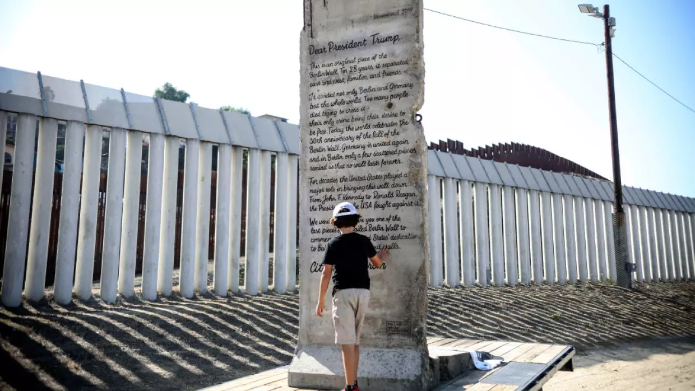
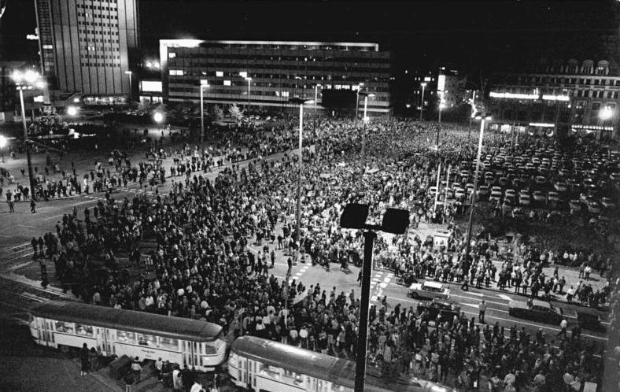

El Muro de Berlín fue una construcción física y simbólica que dividió a Alemania y, en muchos aspectos, al mundo. Levantado por la Alemania Oriental en 1961, el muro separó Berlín Oriental del Berlín Occidental, aislando a quienes vivían en el lado comunista de quienes estaban en el sector occidental, capitalista y democrático. Más allá de sus 155 kilómetros de cemento y alambradas, este muro se convirtió en un símbolo de la Guerra Fría y la tensa división ideológica entre los bloques liderados por Estados Unidos y la Unión Soviética. Esta estructura comenzó a construirse en agosto de 1961 bajo la dirección del gobierno comunista de la República Democrática Alemana (RDA). En un inicio, se trataba de una simple alambrada que, en apenas días, se transformó en una barrera de hormigón armado. La construcción era una respuesta directa a la crisis migratoria que enfrentaba la RDA, ya que cientos de miles de alemanes orientales huían hacia Berlín Occidental buscando mejores condiciones de vida y libertades políticas.  A lo largo de las décadas, las transformaciones económicas entre Berlín Oriental y Berlín Occidental se volvieron cada vez más evidentes. En el Oeste, impulsada por una economía de mercado abierta y el apoyo financiero de Estados Unidos y Europa Occidental, la ciudad experimentó un rápido crecimiento y modernización. Berlín Occidental se convirtió en un modelo de desarrollo capitalista en medio de un contexto socialista.
A propósito de los 30 años de la caída de muro que dividió las dos Alemanias, un grupo sin fines de lucro envió a la Casa Blanca un pedazo de esa histórica barrera al presidente de EEUU con un hermoso mensaje. Trump lo rechazó y ahora está frente a una sección de la barrera entre México y EEUU en San Ysidro.
Antes de la construcción del muro, Berlín Occidental era una vía de ç escape para miles de ciudadanos del Este. Las políticas restrictivas de la RDA, sumadas a la falta de libertades y oportunidades, incentivaban el deseo de huir. Muchas personas cruzaban a diario para trabajar en el sector occidental, pero regresaban al Este para vivir. Sin embargo, cuando los controles aumentaron, el éxodo se hizo masivo y permanente.
 En 1989, una serie de protestas pacíficas estallaron en Berlín Oriental y otras ciudades de la RDA. Los manifestantes eran claros; exigían reformas democráticas y la apertura de las fronteras. Estas concentracionees, organizadas por movimientos ciudadanos, congregaron a miles de personas, que mostraban un descontento sin precedentes. Las manifestaciones, conocidas como las Montagsdemonstrationen (manifestaciones de los lunes), presionaron al gobierno de la RDA. Estos, debilitados y sin apoyo directo de Moscú, tuvieron que aceptar las peticiones de la ciudadanía.